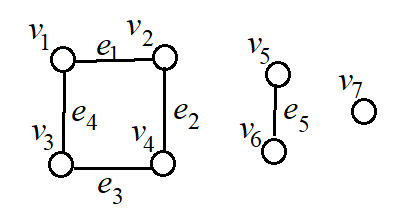
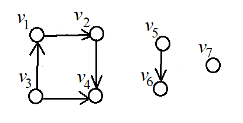
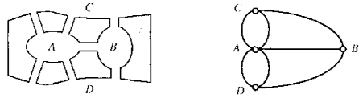
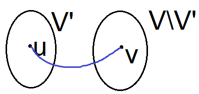

Графы#
Если вдруг все дороги ведут в никуда, значит, пора возвращаться домой…
Возможно, самое распространенное применение графов — это описание сетей. Точки сети — это узлы графа, а связки — ребра между ними. Существует большое количество разных видов сетей; в первую очередь компьютерные сети, где все компьютеры соединены друг с другом, тут же и транспортные сети, которые с помощью автомагистралей, авиа- и железнодорожных путей соединяют друг с другом города. В плане компьютерных сетей самым ярким примером будет Интернет, да и название Сеть говорит само за себя: она состоит из страниц-узлов, соединенных друг с другом гиперссылками. «Википедия» — особо огромная сеть, разновидность глобальной Сети. Если заглянуть в область электроники, электросхемы состоят из электротехнических компонентов, таких как транзисторы, соединенных цепями. В биологии мы встречаем метаболические сети, которые, помимо прочего, содержат метаболические пути: химические вещества связаны химическими реакциями. Социальные сети представлены как графы, в которых узлами являются люди, а ребрами — их отношения. Распределение работы между людьми и машинами тоже можно смоделировать с помощью графов: задания — это узлы, а взаимосвязи между ними, например распределение приоритетов заданий, можно считать ребрами. (Луридас - Алгоритмы для начинающих)
Основные понятия#
Источник: лекции ВМК МГУ
Пусть задано конечное множество \(V = \{v_1, v_2, \ldots, v_n\}\) - вершины графа. Некоторые (неупорядоченные) пары вершин соединяются рёбрами, все рёбра образуют множество \(E = \{e_1, e_2, \ldots, e_m\}\), где \(e_k = \{v_i, v_j\}\).
Графом называется пара множеств: вершин и рёбер, то есть \(G = \langle V, E \rangle\).
Поскольку число различных неупорядоченных пар, выбранных из множества с \(n\) элементами, равно \(C_n^2 = \dfrac{n(n-1)}{2}\), то максимальное число рёбер в графе равно \(\dfrac{n(n-1)}{2}\).
Пример. На рисунке представлен граф с 7 вершинами и 5 рёбрами.
\(V = \{v_1, v_2, \ldots, v_7\}\)
\(E = \{e_1 = \{v_1, v_2\}, e_2 = \{v_2, v_4\}, e_3 = \{v_3, v_4\}, e_4 = \{v_3, v_1\}, e_5 = \{v_5, v_6\}\}\)

Ориентированным графом называется пара множеств: вершин и ориентированных рёбер. Ориентированное ребро - это упорядоченная пара вершин графа.
Пример. Если в предыдущем примере считать все пары упорядоченными, то получится такой орграф.
\(V = \{v_1, v_2, \ldots, v_7\}\)
\(E = \{(v_1, v_2), (v_2, v_4), (v_3, v_4), (v_3, v_1), (v_5, v_6)\}\)

С помощью графа мы задаём структуру связей между элементами. Так, в компьютерной сети информацию можно передать между узлами по каналам связи, которые моделируются рёбрами графа.
Граф с кратными рёбрами называют мультиграфом. Если, помимо кратных рёбер, допускаются и петли, получается псевдограф. Таким образом, в мультиграфе множество рёбер является мультимножеством, а в псевдографе в качестве рёбер выступают и пары одинаковых вершин.
Путь в графе - это чередующаяся последовательность вершин и рёбер этого графа \(v_{i_1} \; e_{i_1} \; v_{i_2} \; e_{i_2} \; v_{i_3} \; \ldots\), в которой каждое ребро соединяет соседние с ним вершины.
Пример. В приведенном ориентированном графе допускается такой маршрут: \(v_3 \; (v_3, v_1) \; v_1 \; (v_1, v_2) \; v_2 \; (v_2, v_4) \; v_4\).
Если путь состоит из вершин \(v_1, v_2, \ldots, v_l\), причём начальная вершина совпадает с конечной, то есть \(v_1 = v_l\), то это замкнутый путь. Если в замкнутом пути вершины не повторяются, его называют циклом.
Связность графа#
Рассмотрим неориентированный граф.
Граф называется связным, если между любой парой его вершин существует путь.
Связная компонента графа - это максимальный по включению (вершин и рёбер) связный подграф.
Чтобы уточнить понятие связности, введем на множестве вершин графа отношение достижимости \(\rho\). Пара вершин \((v_i, v_j)\) принадлежит отношению \(\rho\) (т.е. \(v_i \rho v_j\)), если существует путь из \(v_i\) в \(v_j\).
Упражнение. Докажите, что отношение достижимости рефлексивно, симметрично и транзитивно.
Итак, \(\rho\) является отношением эквивалентности.
Следовательно, всё множество вершин разбивается на классы эквивалентности - это и есть связные компоненты.
Утверждение. В связном графе \(|E(G)| \geq |V(G)| - 1\).
Доказательство. Проведем доказательство методом математической индукции по числу вершин графа. Докажем, что в любом связном графе с \(n\) вершинами справедливо \(|E| \geq n - 1\). База индукции: при \(n = 1\) доказывать нечего. Гипотеза индукции: допустим, что утверждение доказано для \(n = k\). Шаг индукции: рассмотрим граф с \(n = k + 1\) вершинами и докажем, что \(|E| \geq k\). Уберём из графа \(n\)-ю вершину вместе со всеми исходящими из неё ребрами. Получим граф \((V', E')\), в котором хотя бы на одно ребро меньше, и в нём \(k\) вершин. Значит, для этого графа \(|E'| \geq k - 1\). Следовательно, для графа \((V, E)\) выполнено неравенство \(|E| \geq |E'| + 1 \geq (k - 1) + 1 = k\). Утверждение доказано.
Утверждение. Для любого графа \(G\) выполняется неравенство:
\(|E(G)| - |V(G)| + |C(G)| \geq 0\),
где \(V(G)\) - множество вершин, \(E(G)\) - множество рёбер, \(C(G)\) - множество связных компонент.
Число в левой части неравенства называется цикломатическим числом графа.
Доказательство. Разберём сначала случай связного графа, в котором \(|C(G)| = 1\). В этом графе число рёбер не меньше, чем число вершин без единицы, т.е. \(|E(G)| \geq |V(G)| - 1\).
Теперь рассмотрим общий случай. Для каждой связной компоненты \(G'\) графа \(G\) выполняется неравенство \(|E(G)| - |V(G)| + 1 \geq 0\). Суммируя эти неравенства по всем связным компонентам графа, приходим к требуемому неравенству.
Степени вершин#
Источник: Вялый и др. - Лекции по дискретной математике
Рассмотрим неориентированный граф.
Степень вершины - это число смежных с этой вершиной рёбер.
Будем обозначать степень вершины \(u\) через \(\mathrm{deg}(u)\). По определению,
\( \mathrm{deg}(u) = |\{ v \in V \colon \{u, v\} \in E \}| \)
Эта запись означает: степень вершины \(u\) равна мощности множества вершин графа \(v\), которые соединены ребром с \(u\).
Лемма (о рукопожатиях). В неориентированном графе \(G\) сумма степеней всех вершин равна удвоенному числу рёбер:
\( \sum\limits_{v \in V} d(v) = 2|E| \)
Доказательство. Рассуждаем по индукции. Будем проводить в графе ребро за ребром. Пусть на \(k\)-шаге оказалось, что сумма степеней вершин равна удвоенному числу шагов \(2k\). Сделаем ещё один шаг. Так как рёбра в графе не повторяются, при добавлении одного ребра общее число рёбер в графе увеличивается на \(1\). При этом степени ровно двух вершин увеличатся на 1. Таким образом, к левой и правой части равенства будет прибавлено число \(2\), следовательно, равенство остается верным.
Следствие. В любом неориентированном графе число вершин, имеющих нечетную степень, чётно.
Упражнение. Докажите, что в любом графе с более чем одной вершиной есть две вершины одинаковой степени.
Задача. На контрольной каждый из 20 школьников решил ровно 3 задачи, а каждую задачу решило ровно 5 человек. Сколько было задач?
Построим двудольный граф (доля школьников и доля задач), в котором каждая из 20 вершин первой доли соединена ровно с 3 вершинами второй доли, а каждая вершина из второй доли соединена ровно с 5 вершинами первой доли.
Заметим, что в двудольном графе сумма степеней вершин первой доли равна сумме степеней вершин второй доли. Обозначив пеизвестное число вершин второй доли через \(x\), приходим к уравнению \(20 \cdot 3 = 5x\). Отсюда \(x = 12\). Значит, число задач равно 12.
Упражнение. В компании из 6 человек некоторые знакомы друг с другом (это симметрично: если А знаком с Б, то и Б знаком с А). Докажите, что можно выбрать трёх человек, которые либо попарно знакомы (все три пары), либо попарно незнакомы (все три пары).
Двудольные графы#
Источник: Вялый и др. - Лекции по дискретной математике
Двудольный граф с долями \(L\) и \(R\) - это граф с множеством вершин \(V = L \cup R\), где \(L \cap R = \varnothing\), в котором всякое ребро соединяет вершину из левой доли \(L\) с вершиной из правой доли \(R\). Итак, всякое ребро двудольного графа соединяет левую долю с правой.
Например, левая доля - студенты, правая доля - учебные курсы. Вершины (студент и курс) соединены ребром, если студент прослушал соответствующий курс.
Другой пример: левая доля - кавалеры, правая доля - дамы. Ребро означает, что они танцевали друг с другом.
Ещё пример: левая доля - остановки, правая доля - маршруты автобусов. Путь в таком графе между двумя остановками - это возможность проехать между ними на автобусе (возможно, с пересадками).
Задача. Дан произвольный неориентированный граф. Как раскрасить его вершины в два цвета так, чтобы никакое ребро не соединяло пару вершин одного цвета? (Как сделать граф двудольным?)
Алгоритм раскраски. Начнём с любой вершины графа, начнём обход графа (в глубину или в ширину). При прохождении по всякому ребру меняем цвет вершины на противоположный. Если оказалось, что какое-нибудь ребро соединяет две вершины одного цвета, то значит, искомой раскраски не существует.
Теорема. Раскраска графа в два цвета возможна тогда и только тогда, когда в графе нет циклов нечётной длины.
\(\Rightarrow\): Если в графе есть цикл нечётной длины, то его нельзя раскрасить: проходя по циклу, получим противоречие. (Например, вершины треугольника нельзя раскрасить так, чтобы концы любого ребра были разного цвета.)
\(\Leftarrow\): Предположим, что циклов нечётной длины нет. Выберем некоторую вершину \(a\) и решим, что она белая. Для любой другой вершины \(b\) посмотрим, сколько рёбер в пути от \(a\) к \(b\).
Лемма. Пусть в графе нет циклов нечётной длины. Тогда если есть два пути из \(a\) в \(b\), то либо в обоих чётное число рёбер, либо в обоих нечётное.
Доказательство леммы. Если есть путь \(a \to b\) с чётным числом рёбер, а также другой путь \(a \to b\) с нечётным числом рёбер, то в графе есть цикл с нечётным числом рёбер. Действительно, можно пройти из \(a\) в \(b\) по первому пути и вернуться по второму. Таким образом, это противоречит предположению, что в графе нет циклов нечётной длины. Значит, такого быть не может.
Доказанная лемма позволяет разбить все вершины на 2 класса по чётности длины пути от выбранной вершины \(a\). Требуемая раскраска построена.
Упражнение. Всякое ли дерево можно раскрасить в два цвета?
Степенные последовательности#
Источник: Свами, Тхуласираман - Графы, сети и алгоритмы (с. 157)
Последовательность степеней всех вершин графа называется степенной последовательностью этого графа.
Хакими и Гавел предложили алгоритм построения графа (если он существует), имеющего заданную последовательность степеней.
Алгоритм Хакими. Пусть \(d_1 \geq d_2 \geq \ldots \geq d_n\) - последовательность неотрицательных целых чисел. Уберём \(d_1\), соединив вершину \(v_1\) рёбрами с вершинами \(v_2, v_3, \ldots, v_{d_1 + 1}\). При этом числа \(d_2, d_3, \ldots, d_{d_1 + 1}\) уменьшатся на \(1\). Если при уменьшении получается отрицательное число либо последовательность обрывается - то искомого графа не существует. Иначе продолжаем процесс для получившейся последовательности (упорядоченной по убыванию). Когда вся последовательность обнулится, алгоритм завершается.
Сложность алгоритма Хакими составляет \(O(N^2)\), где \(N\) - число вершин в графе.
Упражнение. Постройте любой граф по степенной последовательности \(2, 2, 3, 3, 1, 1\).
Вычисление отношения достижимости#
Поскольку отношение достижимости получается в результате объединения всех степеней отношения, задаваемого графом, для вычисления отношения достижимости можно применить алгоритм Флойда нахождения транзитивного замыкания отношения.
\(E^* = \mathrm{id}_V \cup E \cup E^2 \cup E^3 \cup \ldots \cup E^k \cup \ldots\)
Смысл этой формулы в следующем. Чтобы понять, какие вершины достижимы одна из другой, следует сначала взять все пары вершин, достижимых за \(0\) шагов (т.е. все пары \(\mathrm{id}_V = \{(v, v)\colon v \in V\}\)). Дальше добавить к ним все пары вершин, между которыми можно пройти за \(1\) шаг (т.е. все вершины, соединенные ребром - множество \(E\)). Затем добавить все пары вершин, между которыми можно пройти за одну “пересадку” (т.е. \(E^2\)) и т.д.
(см. Хаггарти - Дискретная математика для программистов, с. 178)
Алгоритм Флойда генерирует последовательность матриц \(W_0 = M, \; W_1, W_2, \ldots, W_n\), причем элемент матрицы \(W_k\) (\(k \geq 1\)), стоящий на пересечении \(i\)-й строки и \(j\)-го столбца \(W_k(i, j)\), равен \(1\) в том и только том случае, когда существует путь (произвольной длины) из вершины \(v_i\) в вершину \(v_j\) с внутренними вершинами из множества \(v_1, v_2, \ldots, v_k\).
Матрица \(W_0\) совпадает с матрицей смежности \(M\) графа, а \(W_n\) - искомая матрица достижимости \(M^*\). Последовательные проходы цикла for вычисляют матрицы \(W_1, W_2, \ldots, W_n\).
Алгоритм Флойда (вычисление транзитивного замыкания).
\(W := M\)
for \(k = 1\) to \(n\) do
for \(i = 1\) to \(n\) do
for \(j = 1\) to \(n\) do
\(W(i, j) \leftarrow W(i, j) \vee (W(i, k) \land W(k, j))\)
За каждый проход цикла (пронумерованный индексом \(k\)) алгоритм Флойда генерирует матрицу \(W_k\), используя элементы предыдущей матрицы \(W_{k-1}\).
Чтобы найти \(i\)-ую строку матрицы \(W_k\), нам следует вычислить выражения:
\(W_{k-1}(i, j) \text{\textbf{ или }} (W_{k-1}(i, k) \text{\textbf{ и }} W_{k-1}(k, j))\)
Топологическая сортировка#
Источник: Хаггарти - Дискретная математика для программистов (с. 174)
Рассмотрим ориентированный, ациклический граф.
Такой граф определяет частичный порядок на множестве вершин. Точнее, отношение достижимости в таком графе будет рефлексивным, антисимметричным и транзитивным отношением, то есть отношением частичного порядка.
Выделим в этом отношении все минимальные элементы - это вершины графа, в которые не входит ребро. Уберём из графа все минимальные элементы вместе с исходящими из них рёбрами. Запишем все удалённые вершины друг за другом. Повторим эту процедуру, продолжая запись вершин в конец полученной последовательности, пока вершины не закончатся. Это и есть алгоритм топологической сортировки.
Упражнение. В таблице приведен список действий по приготовлению цыпленка с расставленными приоритетами. Нарисуйте орграф. Упорядочите список согласно приоритетам.
Задания |
Предварительные действия |
|
|---|---|---|
А |
Добавить лук к цыпленку |
И |
Б |
Вымыть салат-латук |
Л |
В |
Приготовить салатную заправку |
Л |
Г |
Перемешать жаркое |
К |
Д |
Перемешать салат |
Б, В |
Е |
Разрезать цыпленка |
никаких |
Ж |
Растереть имбирь |
И |
З |
Подать готовое блюдо |
И |
И |
Замариновать цыпленка |
Е |
К |
Поставить казанок на огонь |
А, Ж, З, Л |
Л |
Приготовить рис |
никаких |
Взвешенные графы#
Предположим, что на множестве рёбер задана числовая функция \(d \colon E \to \mathbb R\), сопоставляющая всякому ребру число - его вес. Тройка \((V, E, d)\) называется взвешенным графом.
длина кратчайшего пути
аксиомы метрики
алгоритм Дейкстры
Деревья#
Дерево - это связный, ациклический граф.
Утверждение. Граф является деревом тогда и только тогда, когда между любой парой его вершин существует ровно один путь.
\(\Rightarrow\): Предположим, что между вершинами \(a\) и \(b\) существует два пути. Но тогда объединение этих путей образует цикл. Противоречие.
\(\Leftarrow\): Допустим, что в графе между каждой парой вершин существует ровно один путь, но граф не является деревом. Тогда в графе существуют циклы. Значит, между двумя вершинами есть два пути, их соединяющих. Противоречие.
Утверждение. Дерево с \(n\) вершинами имеет \(n-1\) ребро.
Доказательство. По индукции. Допустим, что для любого дерева с \(|V| \leq k\) утверждение доказано. Докажем утверждение в случае \(|V| = k+1\). Возьмём любое ребро в дереве с \(k+1\) вершинами. При удалении этого ребра дерево распадается на два поддерева, в каждом из которых не более \(k\) вершин. В одном поддереве с \(n_1\) вершинами будет \(n_1-1\) рёбер, в другом поддереве с \(n_2\) вершинами будет \(n_2-1\) рёбер. Значит, всего в дереве \((n_1-1) + (n_2 - 1) + 1 = (n_1 + n_2) - 1 = (k + 1) - 1\) рёбер, что и требовалось доказать.
Упражнение. Докажите, что при удалении из графа любого ребра, не входящего ни в один цикл, граф теряет свойство связности.
Эйлеровы циклы#
Эйлеров цикл - это замкнутый путь, проходящий по всем рёбрам графа (по одному разу).
Пример. Задача о кёнигсбергских мостах. Можно ли обойти все мосты по замкнутому пути, пройдя по каждому мосту только раз, вернувшись в исходную точку?

Задача сводится к непрерывному росчерку линий графа.
Теорема. Необходимым и достаточным условием существования эйлерова цикла является чётность всех степеней вершин графа.
< алгоритм построения эйлерова цикла >
Пример (коды Грея). Можно ли перечислить в виде круговой последовательности все двоичные коды длины \(n\) так, чтобы каждый следующий код отличался от предыдущего ровно одной цифрой?
Представим все \(2^n\) двоичных кодов в виде графа. Ребро соединяет два кода, если они отличаются только одной цифрой. Таким образом, степень каждой вершины равна \(n\). Значит, задача имеет решение при любом чётном \(n\) и не имеет решения при нечётном \(n\).
Планарные графы#
Алгоритм Прима#
# \(G = (V, E)\) - исходный граф
\(\sqsupset \, u_0 \in V\) - произвольная вершина
\(V' \leftarrow \{u_0\}; \;\; E' \leftarrow \varnothing\)
for \(k \leftarrow 1..|V|-1\):
# Найти не присоединенную (ещё) вершину,
# ближе всего лежащую к одной из присоединенных
\((u_k, v_k) = \mathrm{argmin}\, \{ d(u, v) \colon (u, v) \in (V' \times (V \setminus V')) \cap E \}\)
# Присоединить вершину \(v_k\) к ближайшей присоединенной
\(V' \leftarrow V' \cup \{v_k\}\)
\(E' \leftarrow E' \cup \{(u_k, v_k)\}\)
# \((V', E')\) - минимальное остовное дерево графа \(G\)
Доказательство корректности алгоритма#
Проведем доказательство по индукции. Докажем следующее утверждение.
На любом \(k\)-м шаге алгоритма (\(k = 0..|V|-1\)) построенное дерево \(G' = (V', E')\) содержится (является подграфом) в некотором минимальном остовном дереве графа \(G\).
База индукции. При \(k = 0\) граф \(G' = (V', E')\), где \(V' = \{u_0\}\), \(E' = \varnothing\), очевидно, является подграфом любого остовного дерева графа \(G\).
Гипотеза индукции. Предположим, что наше утверждение истинно на \((k-1)\)-м шаге алгоритма (\(k \in 1..|V|-1\)).
Шаг индукции. Докажем тогда, что утверждение истинно на \(k\)-м шаге.
Пусть \(T\) - любое минимальное остовное дерево графа \(G\), содержащее в качестве подграфа граф \(G'\), построенный на \((k-1)\)-м шаге алгоритма. Существует хотя бы одно такое дерево \(T\) (по гипотезе индукции).
Разберем два случая:
\((u_k, v_k)\) принадлежит \(T\).
В этом случае утверждение на \(k\)-м шаге истинно. Доказывать нечего.
\((u_k, v_k)\) не принадлежит \(T\).
Напомним, что ребро \((u_k, v_k)\) выбиралось так, что \(d(u_k, v_k) = \min\{d(u, v) \colon (u, v) \in E, \; u \in V', \; V \in V \setminus V'\}\).
Разобьем дерево \(T\) на три подграфа - два поддерева и соединяющее их ребро:
\(T_1 = (V_1, E_1), \quad V_1 = V'\) ;
\(T_2 = (V_2, E_2), \quad V_2 = V \setminus V'\) ;
\(T_3 = (V_3, E_3), \quad V_3 = \{u, v\}\) .
Здесь \((u, v) \neq (u_k, v_k)\), поскольку ребро \((u_k, v_k)\) не принадлежит \(T\).

Заменим ребро \((u, v)\), соединяющее подграфы \(T_1\) и \(T_2\), на ребро \((u_k, v_k)\) - получим новое остовное дерево \(T'\). Докажем его минимальность. В самом деле, в результате замены ребра \((u, v)\) на ребро \((u_k, v_k)\) стоимость остовного дерева не увеличится. Следовательно, стоимость дерева \(T'\) минимальна.
Значит, в графе \(G\) существует минимальное остовное дерево \(T'\), содержащее подграф \(G'\), построенный на \((k-1)\)-м шаге, и ребро \((u_k, v_k)\). А это и есть подграф \(G'\), построенный на \(k\)-м шаге.
Из доказанного утверждения вытекает, что после выполнения всех шагов алгоритма будет построено минимальное остовное дерево графа \(G\). Корректность алгоритма доказана.